Product Strategy · Case Study
For 20+ years, TrueFire ran like a course store: browse the catalog, buy a course, repeat. There was a subscription — All Access — but it was bolted on the side, and some of our best content was locked outside it. I led the work to flip that and make the subscription the whole thing: one membership that includes everything and actually builds with you as you get better. The marketing site was the first place that shift had to become real. Here's how we did it, and why.
Summary
For two decades TrueFire ran like an online course store: a deep catalog, à la carte purchases, and "On Sale" ribbons. It did have a subscription — All Access — already the biggest single revenue driver. But it ran as a bolt-on: content stayed gated outside it and one-off course sales ran right alongside it, close to an even split. We were hedging between two models.
I led the work to flip that and put the subscription at the center: one membership that includes everything and builds with you as you improve. The marketing site was the first place that change had to show up, and we built the whole story around the comparison people are actually making in their head, paying for something structured versus just using free YouTube.
The Problem
I spent real time on the live site as a new visitor would, and the same thing kept jumping out: the product was hedging. It sold one-off courses and a subscription right next to each other and never fully committed to either. You'd land on a page and get two competing asks — buy this course, or start a free trial.
All Access was already the biggest single revenue driver, but it ran alongside the à la carte catalog rather than replacing it. The bigger problem: our best content — the structured, hand-guided learning paths — was gated outside it. And exit surveys were blunt that the #1 reason people churned was a lack of structure and not knowing what to do next. We were selling the fix to our biggest retention problem à la carte, outside the subscription people had already paid for.
The hero pushed individual courses and led with a feature list ("Master Guitar Faster: Interactive Courses, Tools, and World-Class Instructors"). "On Sale" ribbons and discount urgency ran throughout — ecom tactics that trained people to wait for a deal and quietly undercut the subscription. And there was no argument for why a membership beats the free wall of YouTube.
Three overlapping mega-menus — Learn / Play / Explore — with 40+ links. UXR calls were consistent: most people couldn't figure out how to get around or find what they came for. That's what drove simplifying the nav and pulling every content type into one Browse and one Search.
Course detail pages pull a big share of our organic search traffic — one of the highest-traffic templates on the site. They were built like product pages: walls of small text, a giant table of contents above the fold, forum-style comment threads in place of reviews. Built to close a single sale, with nothing that pointed you to what comes next.
The site ran on a legacy stack spread across several languages. URLs were opaque IDs like /c1762 instead of readable slugs. Any rebuild had to set up redirects carefully so we didn't tank our best organic pages, then actually enhance them — and that work set up the bigger prize: programmatic SEO across the catalog.
The Insight
Selling courses one at a time leaves gaps all over the journey, and a stack of courses never really adds up to progress. We're an education company in the AI era. We need to go deep on personalization and build a platform that meets each learner where they are, grows with them, and guides them to know exactly what to do next.
That's the real shift. A pile of one-off courses leaves holes all over the learner's journey (more on exactly where, below), and it never maps back to real progress. A subscription only works if people keep showing up and keep improving, which means the product actually has to guide them through it. So we stopped hedging: we took All Access, pulled the gated content in, and made the subscription the way you actually use TrueFire. But that's just the start. The harder, more valuable work is the personalization underneath it, the thing that actually guides each learner, and that's what we're building toward.
The roadmap
Making good on "builds with you" is bigger than a marketing site, so before we built anything I mapped our whole product against a User Journey Cycle — the loop every learner runs through. You set a goal, make a plan, make progress, celebrate the win, and go again, with content, tools, and incentives feeding it the whole way.
Here's what that exposed. We're deep on one piece: content. 80,000+ lessons. But almost everything else was thin or missing. No real onboarding or goal-setting. No custom learning paths or practice schedules. Barely any of the tools that tell you how you're doing — check-ins, assessments, progress tracking, a dashboard, streaks. And weak incentives, the milestones and badges that give you a sense of momentum.
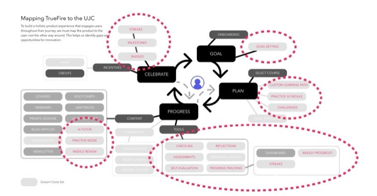
That's the same gap our churn surveys kept pointing at: people leave because they don't know what to do next. The map turned a vague "lack of structure" complaint into a concrete list of things to build.
So the marketing site is step one — it tells the new story. The gaps on this map are the feature roadmap we're building alongside it, the pieces that actually make the membership build with you.
Leadership
We wanted to completely redevelop the entire product, the app and the website. But the goal was to get an acquisition lift, ASAP. With that mandate, we decided to update the marketing site first, for a few reasons:
With that decided, here's how we built it:
The Work
Scroll inside each pane to scrub the full page. The first three carry the whole story.
Before: a storefront pushing individual courses to people already sold. After: a membership pitch that makes the one argument that matters to a newcomer — why a subscription that builds with you beats the free wall of YouTube. It's also where most of our paid traffic lands, so the new positioning hits our highest-volume entry point.
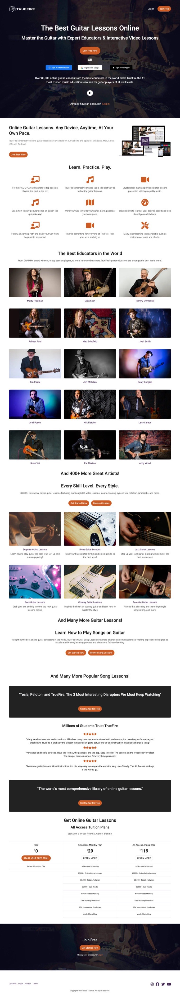
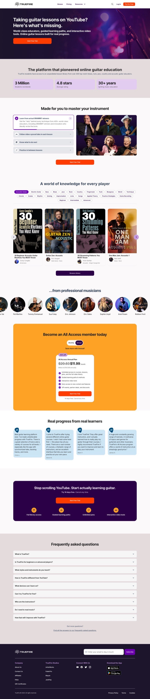
↕ scroll each pane
One of our highest-traffic templates went from a syllabus dump to a page that actually sells the course: sample lessons, scannable "what's included," star reviews, similar courses, FAQ.
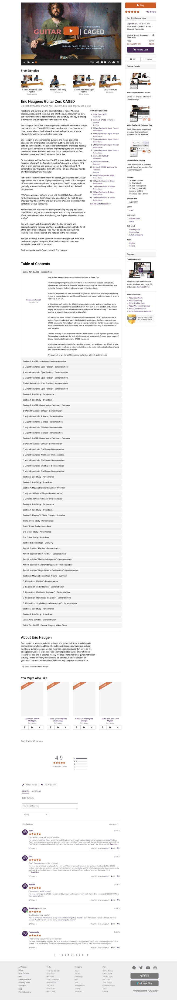
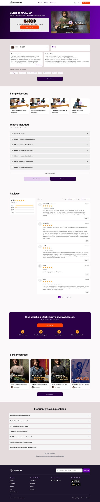
↕ scroll each pane
Three competing mega-menus collapsed into one clean bar (Browse / Pricing / Resources). UXR showed people couldn't find what they came for, so we pulled every content type into one Browse and one Search.
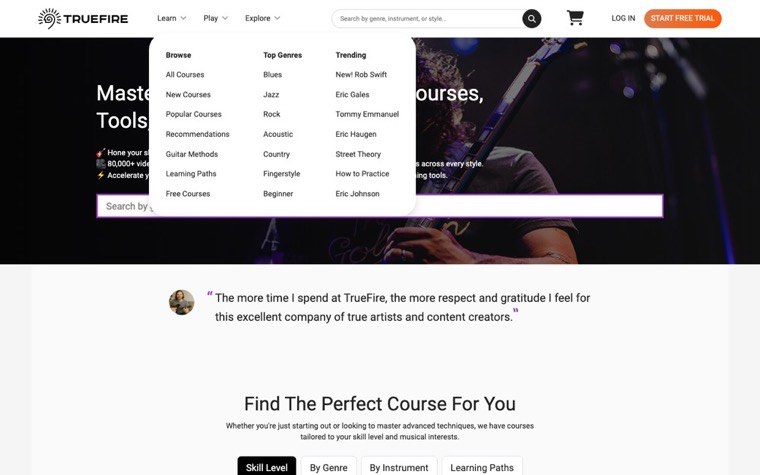
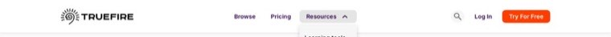
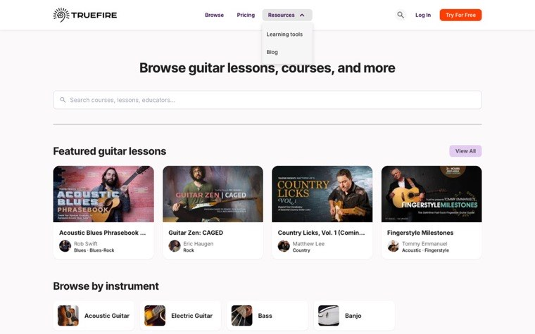
The old search was a cramped grid plastered with "On Sale" ribbons. The new one is a clean layout of big, modern cards on the new design system, with the membership pitch woven right into the results.
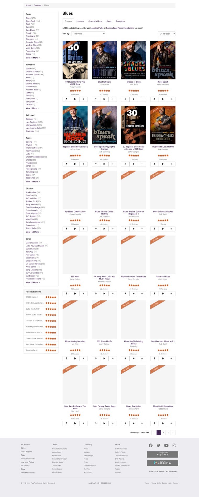
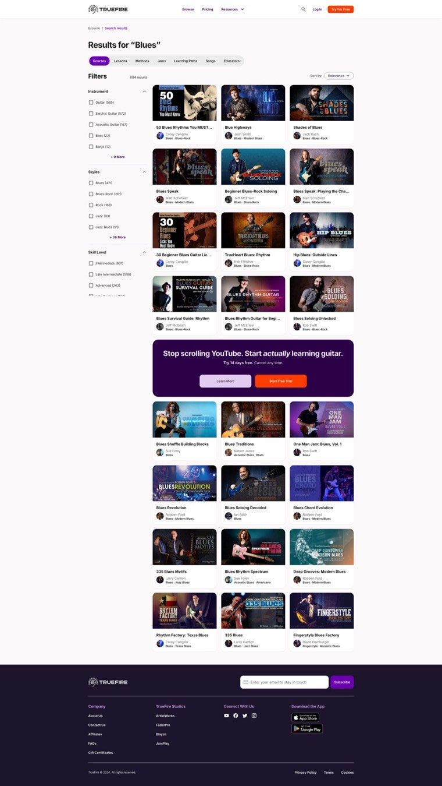
↕ scroll each pane
A lighter, more scannable entry point into an 80,000-lesson library. Rendered page weight dropped ~5.1MB → ~3.5MB.
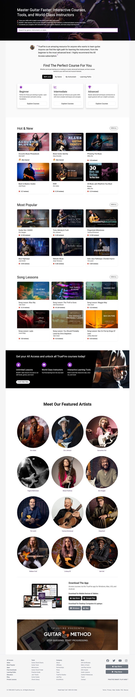
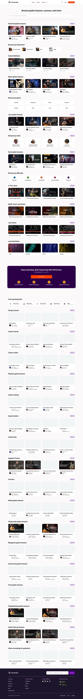
↕ scroll each pane
Roadmap
Honest scope on what launch did and didn't solve.
Reflection
Honestly, the marketing site was the easy part. It changes the story we tell people, but it doesn't change what happens once they're inside the product. And a bump in acquisition only matters if people stick around. Otherwise we're just filling a leaky bucket faster. The real work is everything the journey map exposed: actually guiding each learner, and making them feel like they're getting better every week. That's where retention comes from, and it's the harder build that comes next.
AI is what makes this possible now. It lets us give every learner the kind of hyper-personalized guidance that used to take a 1-on-1 teacher, and do it at scale. That's how you actually help someone get better, not just hand them more lessons.